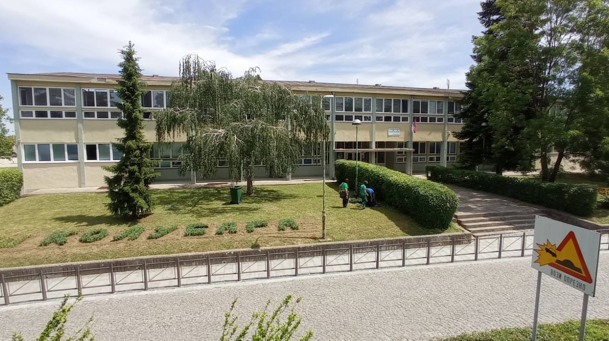
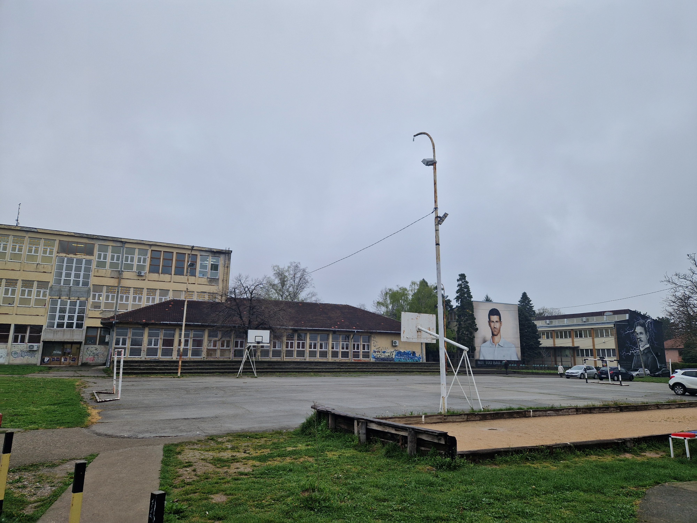
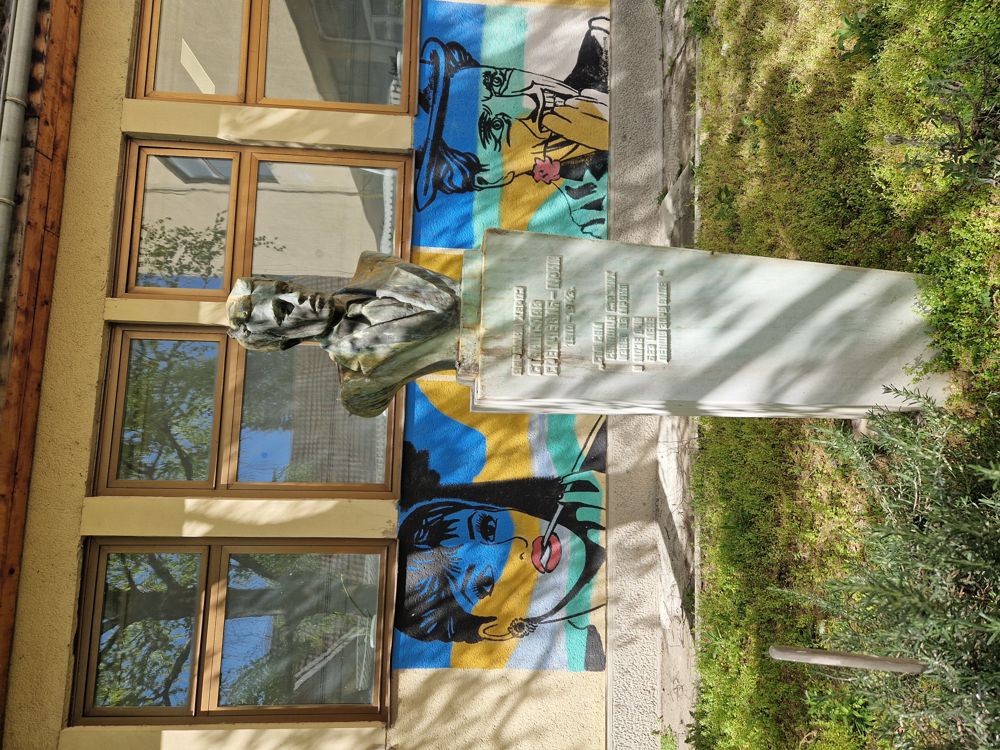
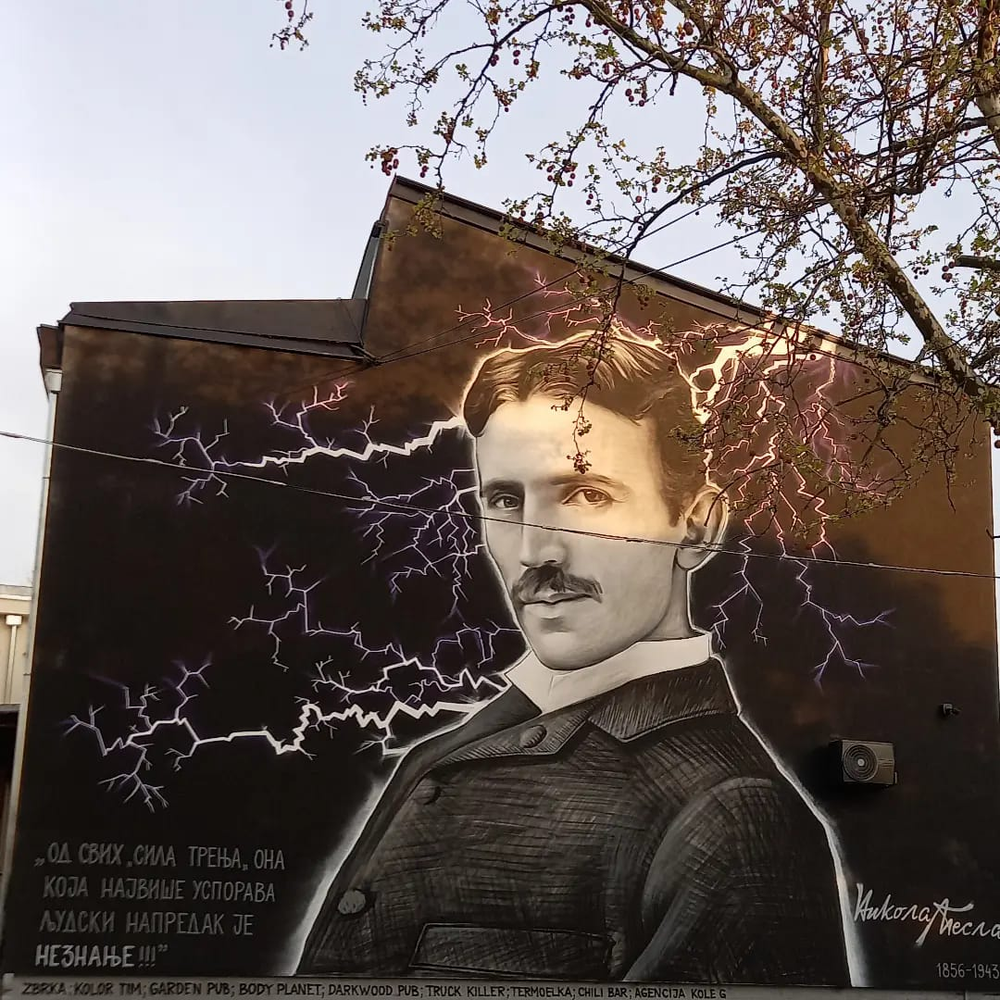
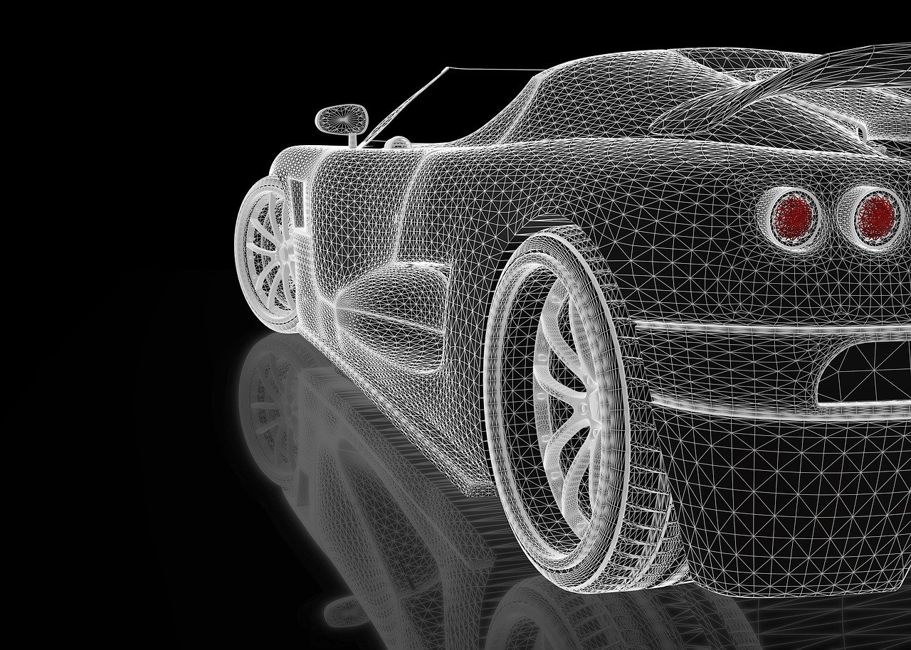
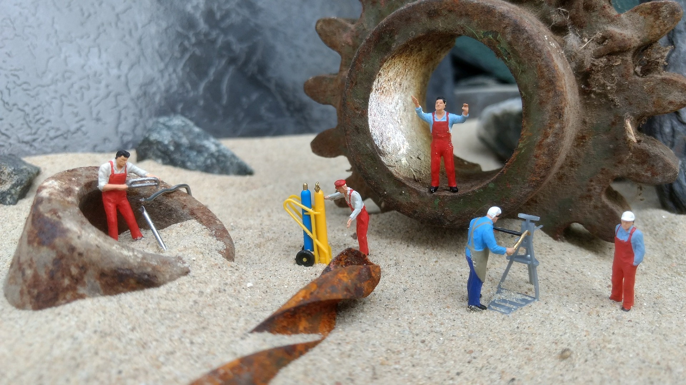
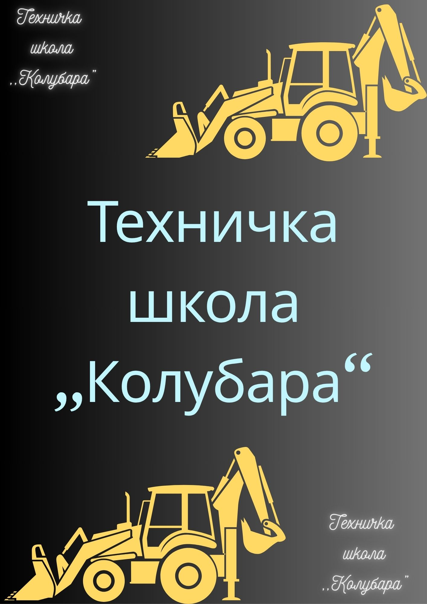
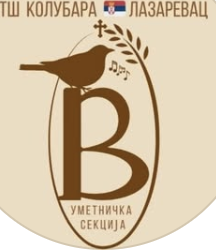

Информатор
Информатор
Техничкe школе "Колубара"


Техничка школа „Колубара“ у Лазаревцу је средња стручна школа која је током свог постојања често мењала назив, јер јој корени датирају још из 1948/49. године када је у Вреоцима постојала као Школа за ученике у привреди. Када се преместила у Лазаревац, добила је и нов назив: Школа за квалификоване раднике.

Године 1958/59. школа почиње са радом као ТШ „Станислав Сремчевић Црни“. Од 1978/79.године, после реформе школства, школа прераста у Образовни центар за усмерено образовање „Станислав Сремчевић Црни“. Као Образовни центар за усмерено образовање „Станислав Сремчевић Црни“ са својим радом наставља до школске 1990/91.године када је одлуком Скупштине Републике Србије и Актом о верификацији раздвојена на две школе: Техничку школу „Колубара“ и Гимназију Лазаревац.

Школа је током протеклих година мењала подручја рада и занимања у оквиру њих у зависности од потреба привреде и рударског басена „Колубара“ . Резултатима свога рада, развојем и мењањем паралелно са РБ „Колубара“ и друштвом у целини, школа је нашла своје место и израсла у васпитно-образовну институцију која има услове да успешно закорачи у будућност.

ЕлектротехникаЕлектротехничар процесног управљања
Електротехничар рачунара
Техничар мехатронике
Аутоелектричар
Електричар

МашинствоТехничар за компјутерско управљање (CNC) машина
Бравар - заваривач
Мехатроничар моторних возила

У оквиру ванннаставног плана и програма наша школа организује секције и учествујемо на разним такмичењима.

Секција из Веронауке организује приредбе кроз које негује посвећеност вери и традицији.
Наши ученици су годинама државни прваци у заваривању. Ове године су се пласирали на престижно такмичење из заваривања у Словачкој.
На регионалном такмичењу из предузетништва наши ученици су били веома запажени са својим радовима.